| 日付 | 2020年7月26日（日） |
|---|---|
| メンバー | 家族（妻、長女・9歳、長男・7歳） |
| アクセス | 車 |
4連休がやってきたが梅雨が明ける気配がなく、4日とも天気の悪い予報が出ている。
世間はGOTOキャンペーンで盛り上がっているが、この天気ではあまり出かける気にならない。
日曜の予報が一番ましだったので、日曜に山に登ろうかと考えていたが、
結局雨予報になり山は断念する。これなら金曜の方がまだましな天気だった。
4日間どこにも出かけないのも嫌なので、一番雨が降らなさそうな銚子観光に行くことにする。
まずは、地球の丸く見える丘展望館に行く。駐車場はガラガラだ。
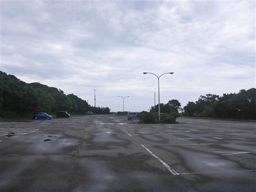
道が封鎖されている。何が危険なんだろう？
あまりにも滑りやす過ぎるからかもしれない。
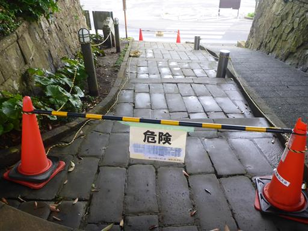
大きなアサガオのような花。
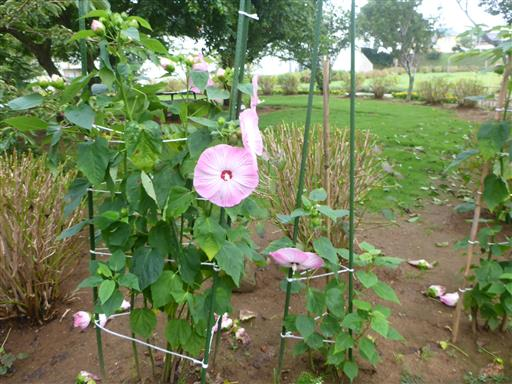
駐車場から少し斜面を登ると入口に到着する。
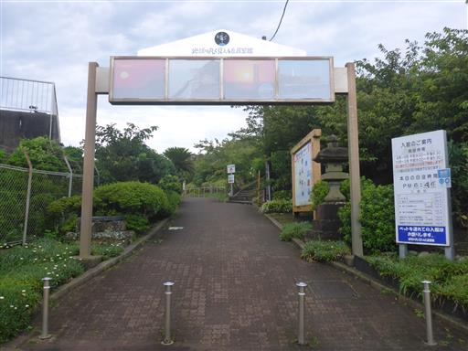
さらに斜面を登ると展望館が見えてくる。
人が少ないと思ったら9時開館で、今がちょうど9時。
入口に到着したタイミングでドアが開いた。ラッキーだ。
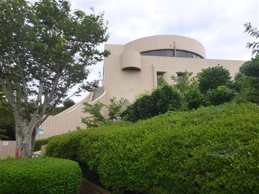
早速階段を登って展望台を目指す。
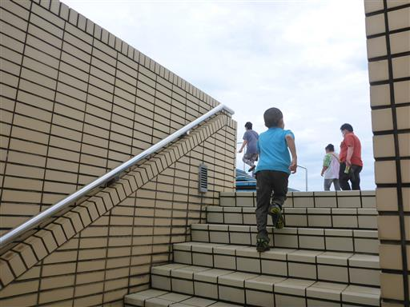
真ん中に台があり、そこから四囲の眺望を楽しめる。
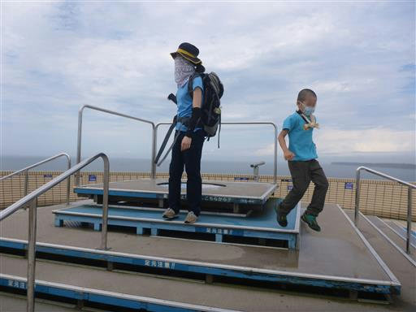
雲は多いが眺望が良い。水平線まで見渡せる。
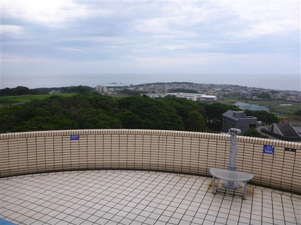
西側の展望。
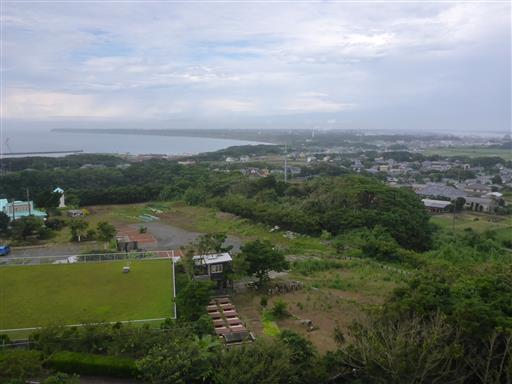
これから向かう予定の屏風ヶ浦が見える。
陸上には風力発電所が並んでいる。
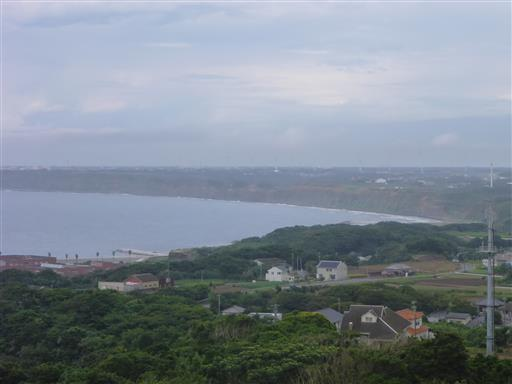
洋上風力発電所。一基しかないので実験用だろう。
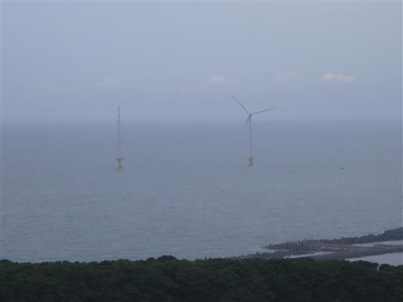
息子は持ってきた双眼鏡で周囲を見渡している。

眼下に日比友愛の碑が見える。巨大なモニュメントだ。
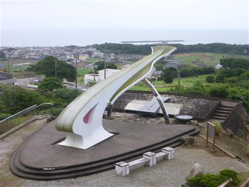
館内にあった鳥観図。古いもののように見えるが、
展望台や灯台が描かれているので、そこそこ新しいのだろう。
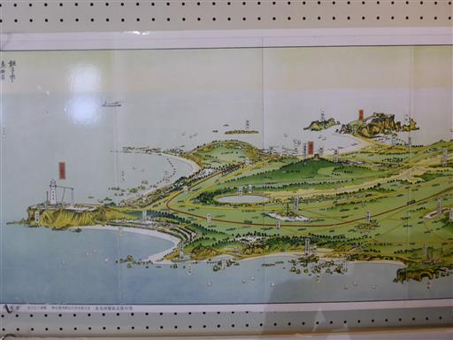
シロナガスクジラのヒゲに絵が描かれている。ものすごく大きなヒゲだ。
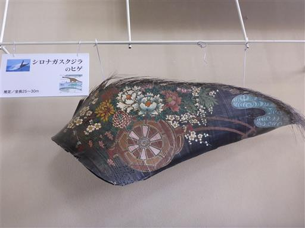
館外に出て日比友愛の碑を見学。
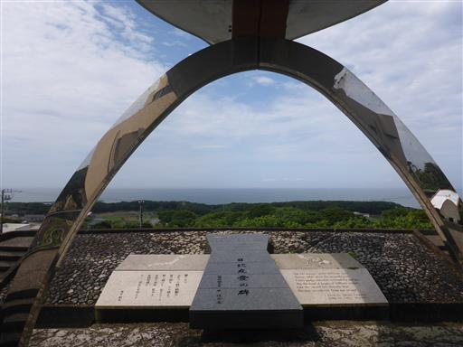
この遥か先にフィリピンがある。
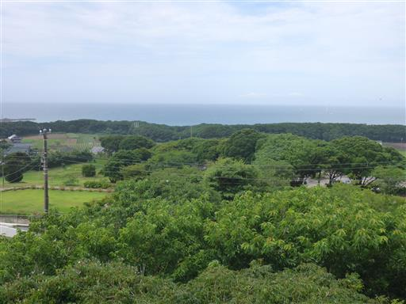
地球の丸く見える丘展望館を後にし、歩いて屏風ヶ浦を目指す。
車道が狭く、道端はゴミだらけで、あまり気持ちの良くない道だ。
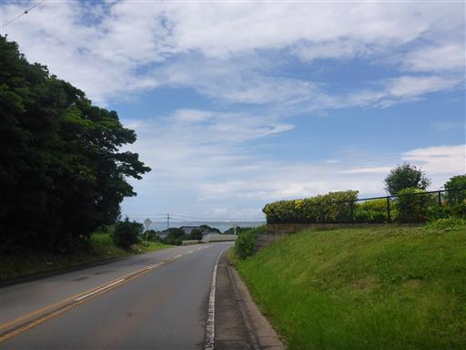
ひまわり。青空が出てきて、ひまわりも嬉しそうだ。
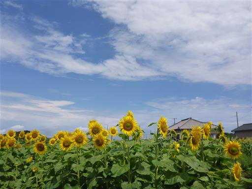
土管。子供のころはよく見かけたが、今の時代でも空き地に土管があるとは思わなかった。
小さめの土管なので遊ぶには不向きだ。
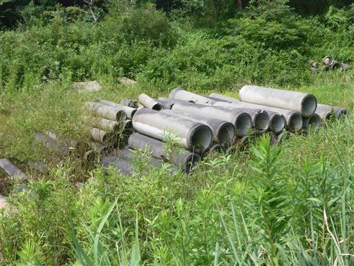
駐車場に到着。思った以上に遠く、移動だけで疲れてしまった。
ここは海水浴場でもあり、オープンはしていないがそこそこ人が来ている。
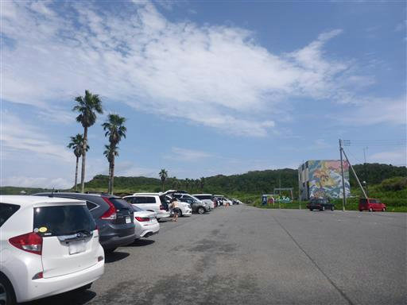
屏風ヶ浦遊歩道入口。
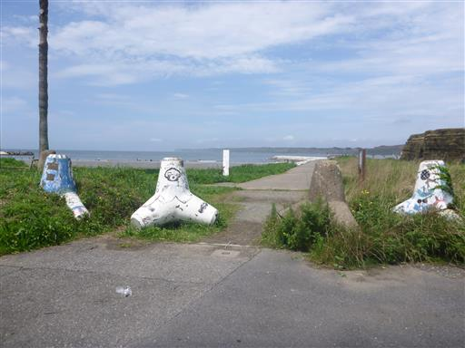
屏風ヶ浦の岩壁。長い年月をかけて波に削られた切り立った崖だ。

砂浜から湯気が出ている。太陽が出てきて、急に砂浜が熱せられているのだろう。
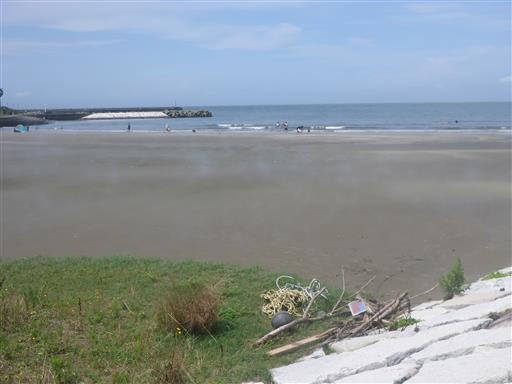
川底は美しい模様を描いている。砂はさらさらで触ると気持ちよい。
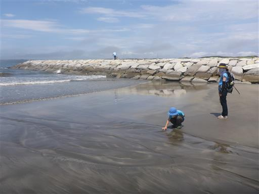
海で少し遊んだら遊歩道に戻る。
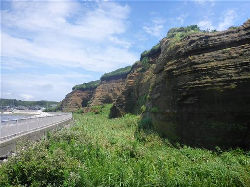
岩壁から川が流れているため、どうなっているかと思ったら
なんと穴が開けられている。いったいどこからやってくる水なのだろう？
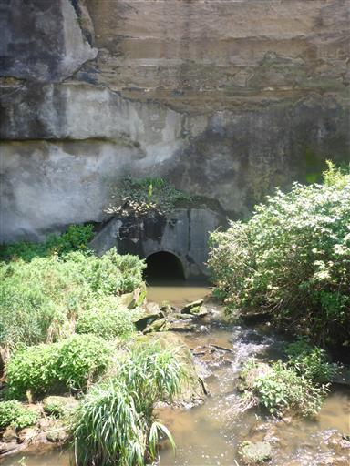
大きな鳥が獲物を探している。シギだろうか？

岩壁に開く穴。解説板によると、これは人が掘った穴らしい。
右側に見える斜めの線は断層で、地層の縞々がずれている様子が見学できる。
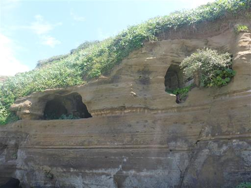
遊歩道の終点に来ても、まだまだ岩壁と道は続く。
遊歩道よりここから先の岩壁の方が高く迫力がある。
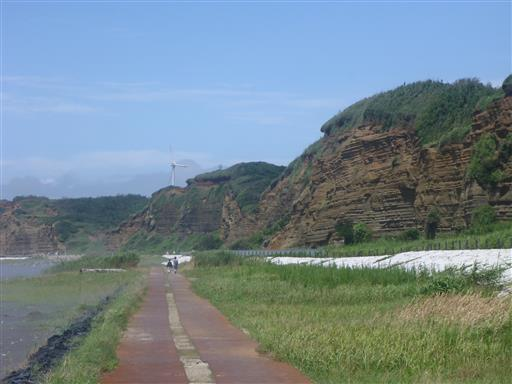
炎天下の中を歩く。展望台から歩いてきたのでお疲れ気味。
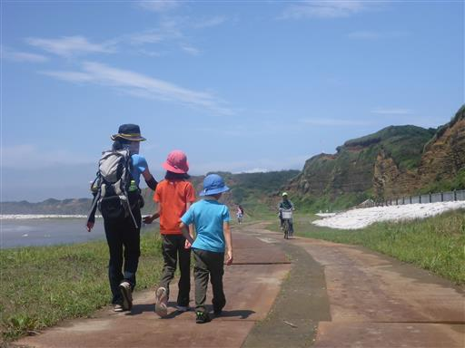
崖崩れが発生している。垂直に近い崖なので、こういうこともあるだろう。
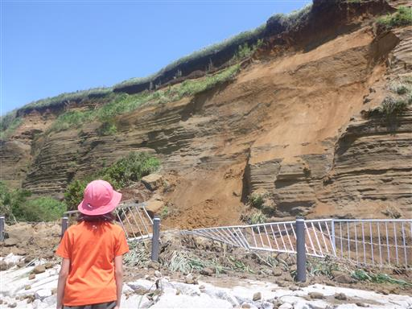
遥か彼方まで続く岩壁。10kmあるそうだ。
テトラポットに守られていることで、この岩壁がこれ以上削られることは無くなってしまった。
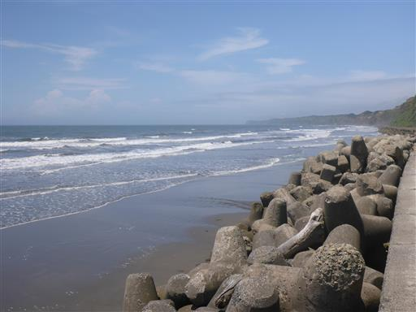
歩道の終点に到着。ここからも歪んだ道が見えるが、通行止めになっている。
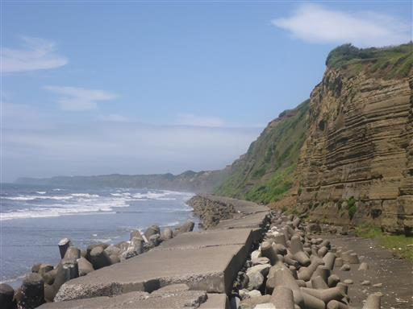
少し引き返して、積まれた石の上で昼食をとることにする。
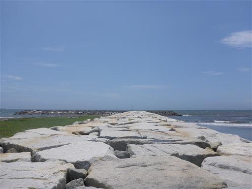
帰りは歩道ではなく砂浜を歩く。こちらの方が足にやさしい。
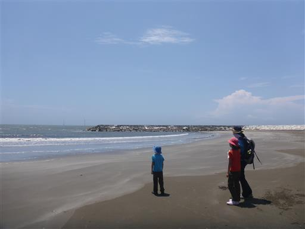
大き目の穴と、土を掘り返した跡があちらこちらに見られる。
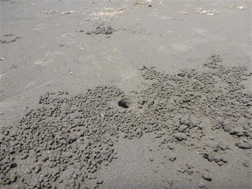
中に生物が潜んでいそうだが、棒を突っ込んでみても反応がない。

岩壁を見ながら、元来た道を引き返す。
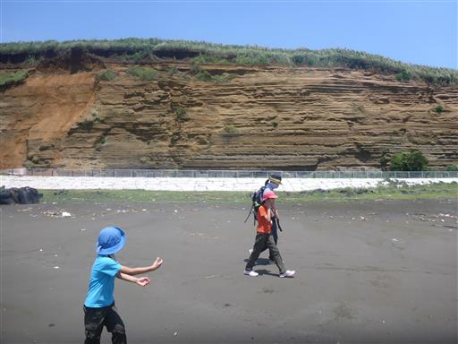
途中、岩壁の切れ目から町に入る。こちらの方が近道だ。
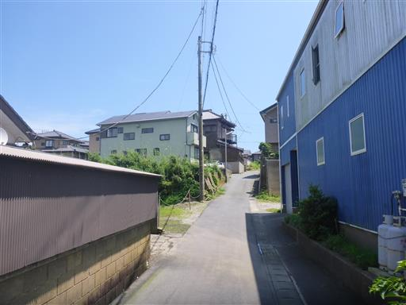
展望台は高所にあるため、坂を登る。
昼になり気温が上がり、雲もなくなって直射日光が暑い。
こんなに晴れるとは思わなかった。
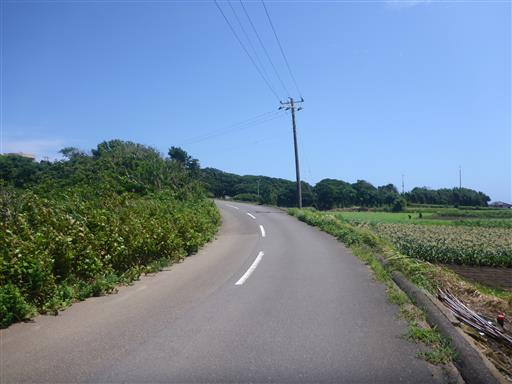
ようやく駐車場に到着。2時間半の散歩だった。
銚子を歩いて回ろうと思っていたがギブアップで、ここからは車で移動することにする。
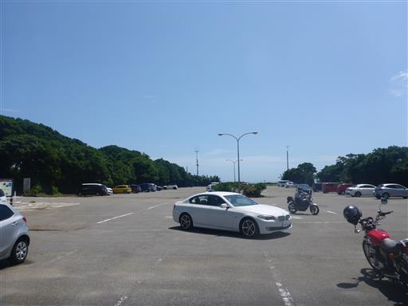
犬吠埼に移動。白い犬吠埼灯台が青空によく栄える。
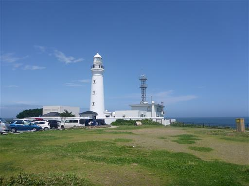
駐車場は車で一杯、売店は人で一杯で、ものすごく賑わっている。
コロナの影響は感じられない。
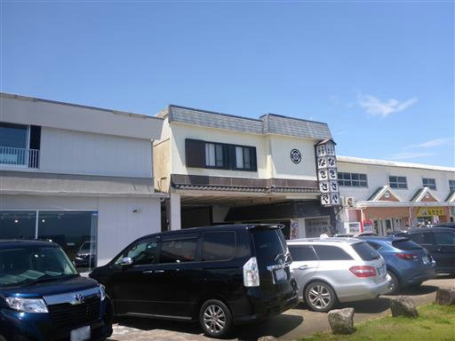
まずは灯台見学をすることにする。灯台も壁も郵便ポストも白い。
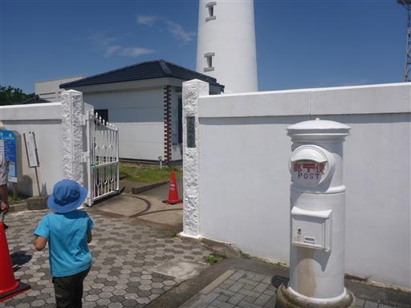
真下から見上げる灯台。この灯台には上ることができる。
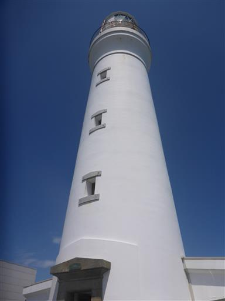
内部は螺旋階段が続く。
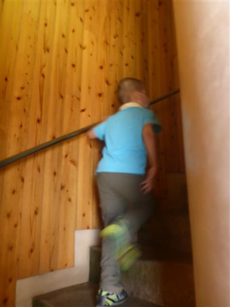
展望台に出ると、絶景広がる。
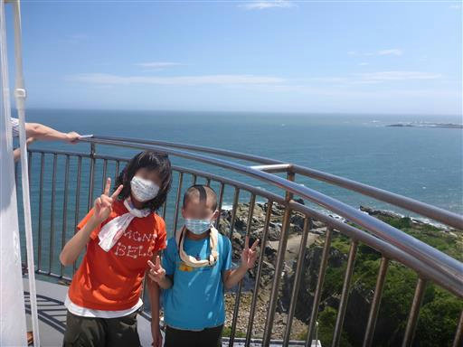
周りを取り囲む広い海。海が近い分、地球の丸く見える丘展望館より展望が良い。
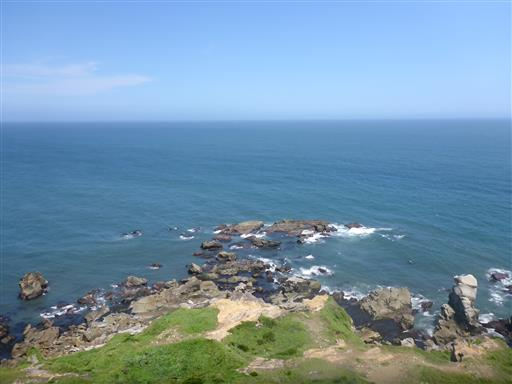
君ヶ浜海岸。
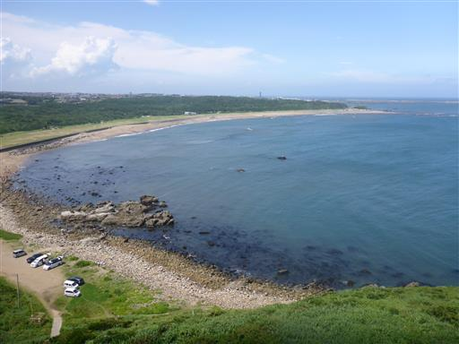
灯台を下りたら、周囲の資料館を訪問。こちらは灯台のランプ。
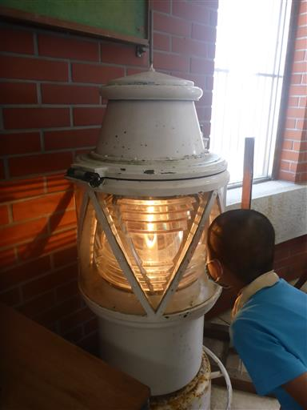
巨大なレンズ。
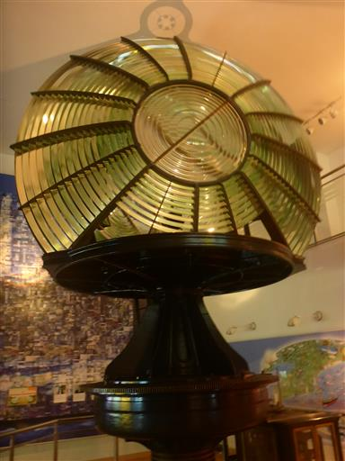
レンズ越しに光を眺める。
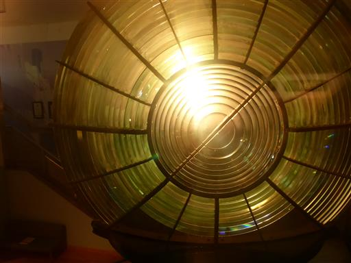
霧笛。今では役割を終えているが、ボタンを押すと当時の音を聞くことができる。
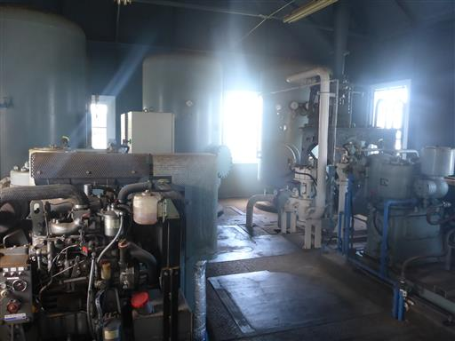
灯台見学を終えたら、磯に下りて遊ぶことにする。
早速生物を探し始める。
カニをゲット。
磯はそこそこ広い。ギザギザの地形は荒崎海岸と似ている。
少し散歩して、周囲を見学する。
マーブル模様の石。
切り立った岩。
壁で囲まれた空間。何をするための場所なのかよく分からない。
波を眺める。この辺りは東映映画オープニング「荒磯に波」の撮影場所だ。
岩に波が打ち付けて、激しく水しぶきが上がる。

息子は再びカニ捕り。棒で突っつくが捕まえることができず不機嫌だ。
長崎鼻や千騎ヶ岩にも行ってみたかったが、犬吠埼でたっぷり遊んだため、
寄り道せずに帰宅することにする。銚子は思った以上に広く、楽しめる場所が多かった。
また機会があれば行ってみたい。